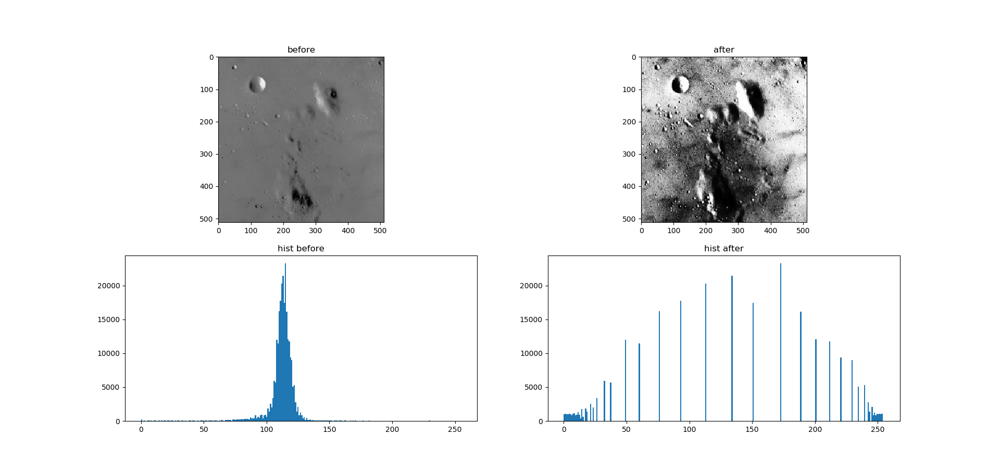

通过一个变换，将输入图像的灰度级转换为`均匀分布`，变换后的灰度级的概率密度函数为
$$P_s(s) = \frac{1}{L-1}$$
直方图均衡的变换为
$$s = T(r) = (L-1)\int_0^r {P_r(c)} \,{\rm d}c $$

图源自skimage
1 import numpy as np
2
3 def hist_equalization(input_image):
4 '''
5 直方图均衡（适用于灰度图）
6 :param input_image: 原图像
7 :return: 均衡后的图像
8 '''
9 output_imgae = np.copy(input_image) # 输出图像，初始化为输入
10
11 input_image_cp = np.copy(input_image) # 输入图像的副本
12
13 m, n = input_image_cp.shape # 输入图像的尺寸（行、列）
14
15 pixels_total_num = m * n # 输入图像的像素点总数
16
17 input_image_grayscale_P = [] # 输入图像中各灰度级出现的概率，亦即输入图像直方图
18
19 # 求输入图像中各灰度级出现的概率，亦即输入图像直方图
20 for i in range(256):
21 input_image_grayscale_P.append(np.sum(input_image_cp == i) / pixels_total_num)
22
23 # 求解输出图像
24 t = 0 # 输入图像的灰度级分布函数F
25 for i in range(256):
26
27 t = t + input_image_grayscale_P[i]
28
29 output_imgae[np.where(input_image_cp == i)] = 255 * t
30
31 return output_imgae$$S = T(r) = (L-1)\int_0^rp_r(w)dw$$
$$p(r_k) = n_k / n$$
$p(r_k)$即为灰度级$r_k$在源图像中出现的概率估计
概率密度函数的积分为分布函数，即对分布函数的导数为概率密度函数。
因为$p_r(r)$与$T(r)$已知，则由
$$\frac{{\rm d}r}{{\rm d}S} = \frac{p_s(s)}{p_r(r)}$$
又因为
$$S = T(r)$$
即
$$\frac{{\rm d}S}{{\rm d}r} = \frac{T(r)}{r}$$
联立上三式及目标变换
$$S = T(r) = (L-1)\int_0^rp_r(w)dw$$
可得
$$p_s(s) = \frac{1}{L-1}$$
故，这意味着变换之后的图像的灰度级为均匀分布，证毕。